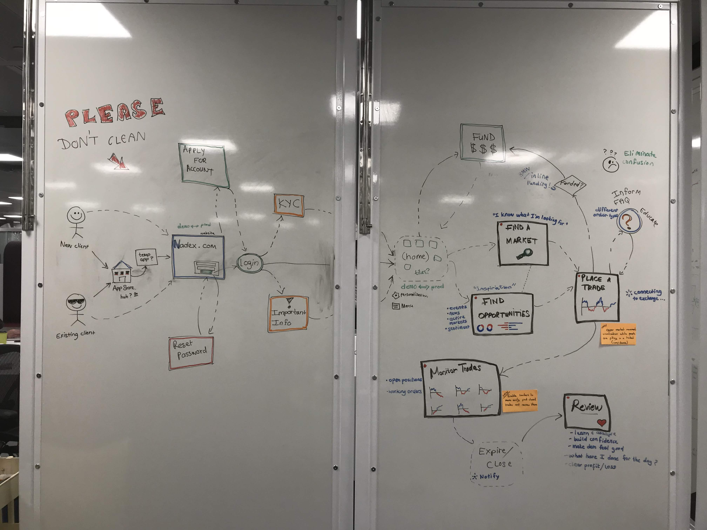
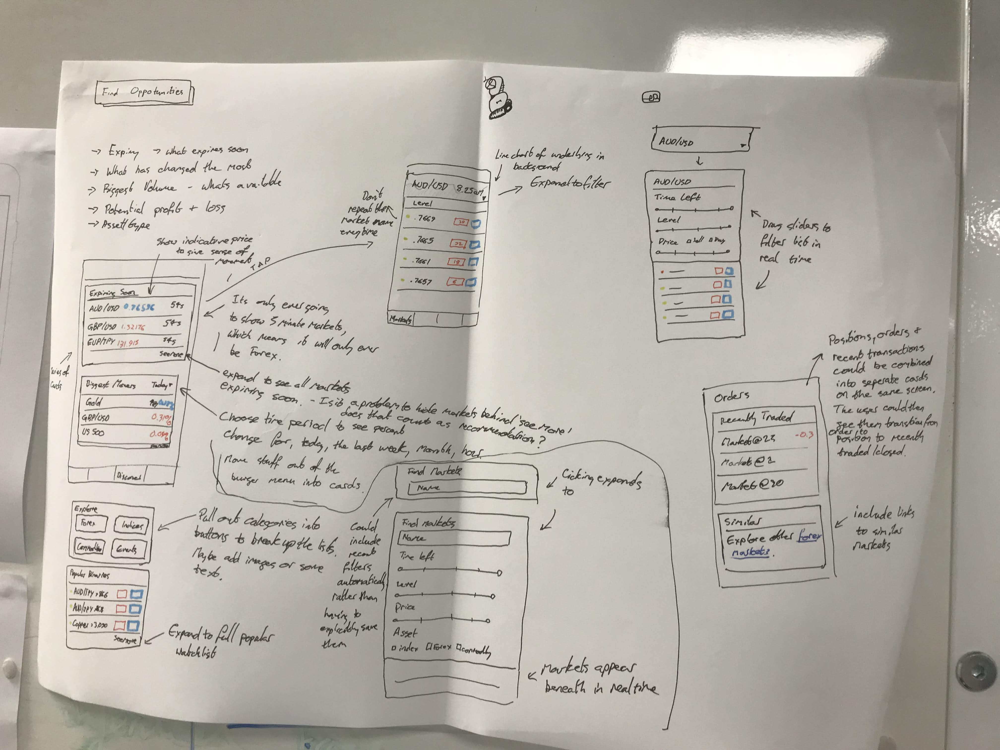
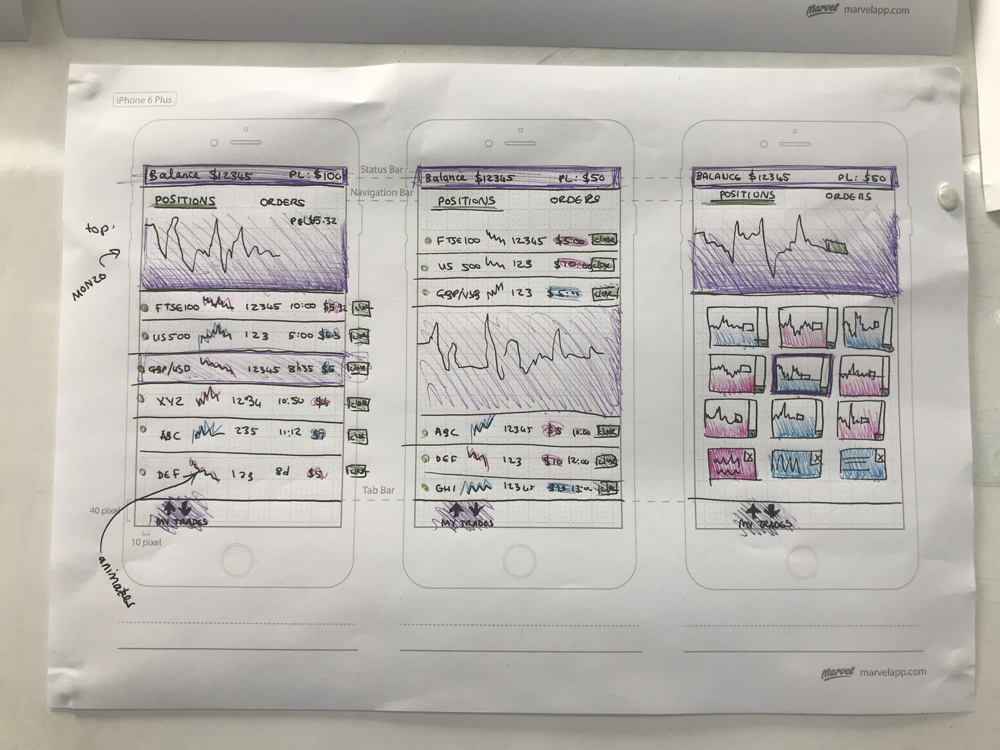

Portfolio
A [Design] Sprint Against Time
Nadex is the world's first provider of exchange traded binary options. With Apple and Google announcing an imminent ban on all binaries trading apps, I led the design efforts of the company's first mobile PWA - helping safeguard around half the company's revenue within weeks.
It was a pleasure. The speed at which you worked, and the transparency of the process was something we're not used to. We felt listened to, and in these few weeks the team's achieved more than in the last 2 years it feels like. It felt exciting to be a part of.


